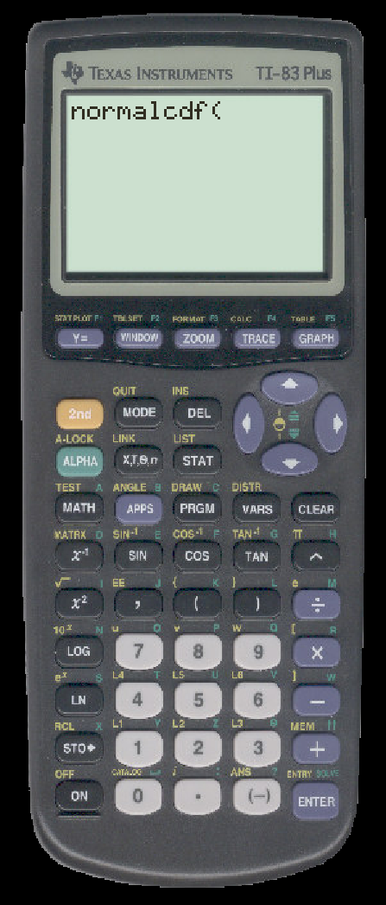
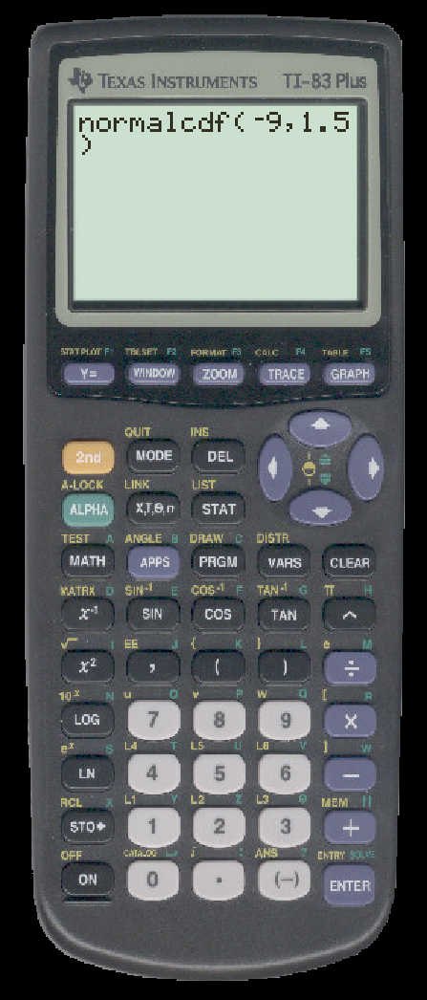
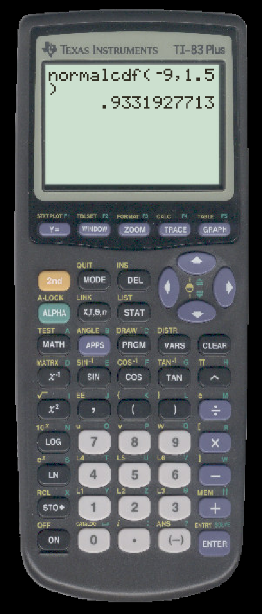
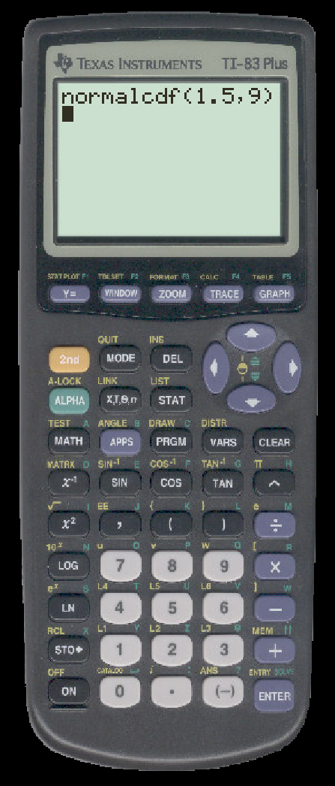
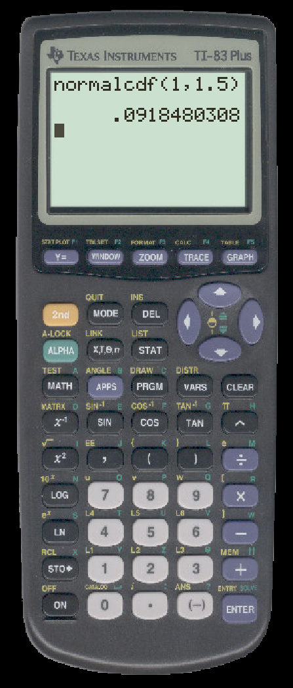

TO CALCULATE STANDARD NORMAL PROBABILITIES ON THE TI
Suppose that z is a random variable with a standard normal distribution. We first calculate P(z < 1.5).
- First press 2ND then DISTR (the VARS button). Scroll to select ``normalcdf("

- The normalcdf command wants two arguments a and b to calculate P(a < z < b). We want P(-∞ < z < 1.5). It is good enough to use -9 for -∞. Enter the arguments a, b in that order:

- Press ENTER and you will see

Next, we calculate P(1.5 < z).
- First press 2ND then DISTR (the VARS button). Scroll to select ``normalcdf("
- The normalcdf command wants two arguments a and b to calculate P(a < z < b). We want P(-1.5 < z < ∞). It is good enough to use 9 for ∞. Enter the arguments a, b in that order:

- Press ENTER and you will see
Next, we calculate P(1 < z < 1.5).
- First press 2ND then DISTR (the VARS button). Scroll to select ``normalcdf("
- Enter the arguments in order:
- Press ENTER and you will see
